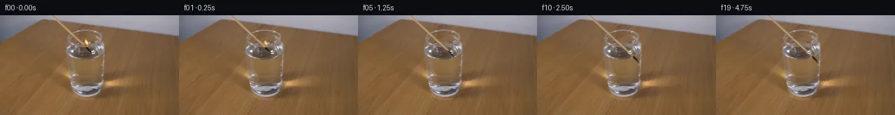

![首帧]()

Round 00
2026-11-05T12:14:56.324876+00:00像素候选变化代码 +249/−0inspection 更新
pixels 1c48621e596f260c · code f6d306e436334d52
查看本轮 generate.py 真实 diff
--- previous/generate.py
+++ current/generate.py
@@ -0,0 +1,249 @@
+"""Deterministic, local pixel continuation of the supplied photograph.
+
+No external assets, models, engines, or image-view tools are used.
+"""
+from pathlib import Path
+import json
+import math
+import numpy as np
+import cv2
+from PIL import Image, ImageDraw
+from artifact_io import save
+
+ROOT = Path(__file__).resolve().parent
+H, W = 144, 256
+FPS = 4
+source = np.array(Image.open(ROOT / 'first_frame.png').convert('RGB'))
+assert source.shape == (H, W, 3)
+original = source.astype(np.float32)
+y, x = np.mgrid[:H, :W].astype(np.float32)
+SLOPE, INTERCEPT = 1.08, 73.8
+NORMAL = math.sqrt(1 + SLOPE**2)
+
+
+def smoothstep(a, b, value):
+ u = np.clip((value-a)/(b-a), 0, 1)
+ return u*u*(3-2*u)
+
+
+def segment_distance(xx, yy, a, b):
+ vx, vy = b[0]-a[0], b[1]-a[1]
+ t = np.clip(((xx-a[0])*vx + (yy-a[1])*vy)/(vx*vx+vy*vy), 0, 1)
+ return np.hypot(xx-a[0]-t*vx, yy-a[1]-t*vy)
+
+
+# Remove only the lower source match, its head, and the flame neighborhood.
+# The upper shaft is preserved because axial insertion leaves its silhouette fixed.
+shaft_distance = np.abs(x - INTERCEPT - SLOPE*y) / NORMAL
+old_wood = (shaft_distance < 2.05) & (y >= 33) & (y <= 46.7)
+flame_region = (((x-124.0)/4.8)**2 + ((y-39.8)/6.7)**2 < 1)
+flame_region |= (((x-122.5)/4.7)**2 + ((y-44.0)/2.7)**2 < 1)
+head_start, head_end = (123.1, 46.1), (129.7, 53.5)
+old_head = (segment_distance(x, y, head_start, head_end) < 2.2)
+# Retain independently visible bright glass reflections next to the black head.
+old_head &= source.mean(axis=2) < 185
+cleanup = old_wood | flame_region | old_head
+clean = cv2.inpaint(source, cleanup.astype(np.uint8)*255, 2.4, cv2.INPAINT_TELEA).astype(np.float32)
+# Do not change any pixel outside the explicitly reconstructed neighborhood.
+clean[~cleanup] = original[~cleanup]
+
+# Photographic flame residual: retain the actual core and local warm spill.
+flame_weight = flame_region.astype(np.float32)
+flame_weight *= 1 - smoothstep(1.5, 2.4, -shaft_distance + 3.8) * 0.0
+flame_residual = np.maximum(original-clean, 0) * flame_weight[..., None]
+# Yellow core primarily lies off the shaft; trim unrelated wood residuals.
+flame_residual[(shaft_distance < 1.45) & (y < 43)] = 0
+flame_residual[y > 46] = 0
+
+# Native pixel layers use 16 subpixel samples for moving slender geometry.
+subsamples = [(a, b) for a in (-.375, -.125, .125, .375)
+ for b in (-.375, -.125, .125, .375)]
+water_region = (((x-122.4)/24.1)**2 + ((y-49.9)/12.0)**2)
+water_mask = (1-smoothstep(.87, 1.00, water_region)) * smoothstep(37.0, 40.0, y)
+contact = (126.2, 49.0)
+
+
+def composite(frame, premultiplied, alpha):
+ return frame*(1-alpha[..., None]) + premultiplied
+
+
+def wooden_extension(frame, dy):
+ endpoint_y = 46.6 + dy
+ rgb_sum = np.zeros_like(frame)
+ alpha_sum = np.zeros((H, W), np.float32)
+ for ox, oy in subsamples:
+ xx, yy = x+ox, y+oy
+ # A small optical displacement applies only below the water surface.
+ wet = smoothstep(48.8, 51.0, yy)
+ refract = .30*wet
+ signed_distance = (xx-refract-INTERCEPT-SLOPE*yy)/NORMAL
+ alpha = 1-smoothstep(1.15, 1.65, np.abs(signed_distance))
+ alpha *= smoothstep(32.8, 34.7, yy)
+ alpha *= 1-smoothstep(endpoint_y-.2, endpoint_y+.45, yy)
+ # Cross-sectional lighting and fine grain fitted to the visible tan shaft.
+ side = smoothstep(-1.3, 1.3, signed_distance)
+ grain = 1.15*np.sin((yy-dy)*2.03) + .6*np.sin((yy-dy)*.67)
+ col = np.empty_like(frame)
+ col[..., 0] = 188.0-17.0*side + grain
… diff truncated; 162 more lines …